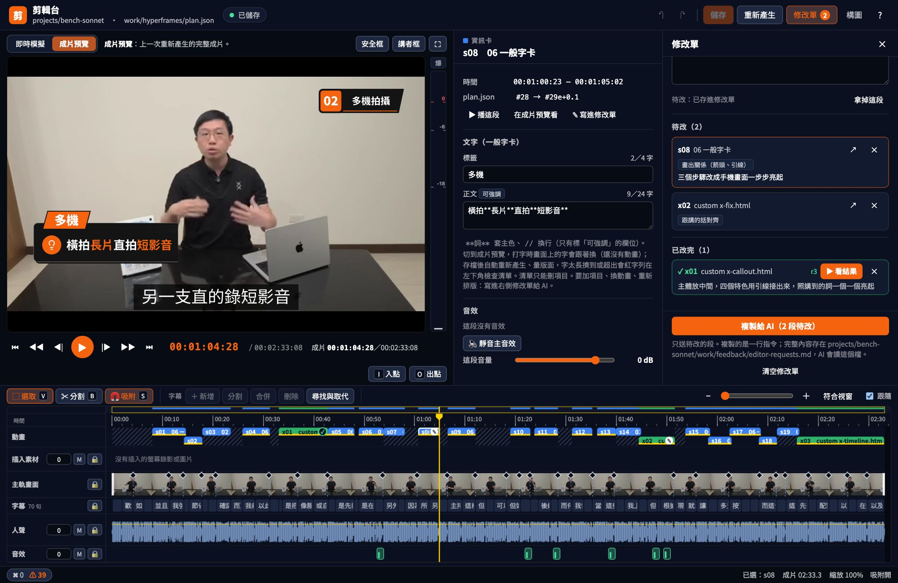

01 · 怎麼用
用說的就能剪片
不用學剪輯軟體，也不用寫程式。放好素材，用平常說話的方式告訴 AI 要做什麼。
放素材
口播影片、只有聲音的旁白、螢幕錄影（邊錄邊講的也可以）、截圖照片，各放進對應的資料夾。有講稿的話，字幕會更準。
說一句話
「剪乾淨」、「做成片」、「配螢幕錄影」，不用記指令。
看預覽、再改
做到重要的地方會停下來給你看，你說「可以」才往下；要改就說哪一段、怎麼改。
- 「剪乾淨」找出講錯重講、卡住的句子剪掉，縮短停頓，照講稿上字幕
- 「做成片」看每段在講什麼，配上資訊卡、情境動畫、子母畫面和音效，人聲音量調到一致
- 「配螢幕錄影」把操作畫面插到講到的那一段，放大、框出重點，多步驟的操作標上 STEP
- 「可以了，輸出成片」輸出 final.mp4，附上驗收截圖
- 「輸出剪映素材」拆成主軌、透明背景的動畫片段和字幕檔，帶去剪映繼續剪
02 · 情境動畫
口播講什麼，
畫面就演什麼
AI 照口播的內容挑情境，從現成的模板改，不從零寫。每張卡都是即時預覽，點進去看全尺寸。
不用記指令，你說的話就是剪輯指令
「剪乾淨」「做成片」「s05 往左移」「字太多」「換暗色」「輸出成片」
03 · 剪輯台與修改單
不滿意，
有三種改法
AI 先做一版，你決定要不要改。知道怎麼改就說一句話；字幕、音量、卡片上的字在剪輯台自己調；說不清楚怎麼改的，勾在修改單上交給 AI 重做。
s05 往左移
知道要改哪一段、怎麼改。只動那一段，改前改後都存版本，不喜歡可以退回。
打開剪輯台
裁剪、調音量、加轉場，改字幕和卡片上的字；你改過的地方 AI 不會再改回去。
更有質感
點一段、勾想怎麼改，複製一行指令給 AI；改完那段標 ✓，一鍵跳過去看結果。

點一段
在時間軸點一段動畫或螢幕錄影，修改單列出這段的字幕。
勾想怎麼改
「以圖像展示為主」「畫出關係」「跟講的話對齊」「更有質感」，或自己寫一句；點了就存。
複製給 AI
只複製一行指令。AI 每段派一個子代理一起改，改好停在預覽給你看。
看結果
改完的段標 ✓、列出 AI 做了什麼，按「▶ 看結果」跳過去；下次只送還沒改的。
一句話就能改的地方
第 3 列不要剪
哪些地方要剪
剪輯清單逐條列出要剪的句子和原因，你確認後才剪。
調好了
畫面放大
在構圖台直接拖框決定放大多少、講者放哪裡，旁邊即時看套上字幕和字卡的樣子。
s05 往左移
某一段的卡片
移位置、改字、換情境，只動那一段，改前改後都存版本。
s12 重新設計
某一段的動畫
先出新的動畫分鏡給你確認；不喜歡可以退回舊版，還有左右對照影片。
s08 不要音效
音效、配樂
從內建音效庫挑，關掉某一段、調音量、片尾加配樂；一分鐘以上沒音效會自動補。
這集要調光
講者畫面
調光、瘦臉、美顏（磨皮、膚色提亮、淡化黑眼圈）預設關閉，構圖時同一頁就能開；剪輯台也有開關和強度滑桿。
這集換暗色
主色、背景、亮暗
內建風格包一鍵換，也能做自己的一包。
講者設定成林大寶
講者名字
講者介紹卡顯示名字和頭銜、金句卡署名；設定一次，每一集都用。
做成直式短影片
橫式／直式
長片用橫式；Shorts、Reels、抖音用直式，字幕和版面自動換。
04 · 運作方式
AI 判斷，程式計算
AI 不自己算秒數，也不從零寫動畫。它看逐字稿決定每一段要怎麼呈現，剩下的時間、版面、響度都交給工作區裡的程式。同樣的素材和分鏡，換哪個 Agent 來做，剪出來都一樣。
AI Agent 做的事
需要理解內容的判斷
- 看程式列出的重講候選和講稿外的話，決定剪輯清單
- 每段先問四題：有沒有對得上的錄影、有沒有看得見的東西在動、是不是流程或對比這類結構、是不是只有一句重點
- 挑錄影、示意動畫、情境動畫或字卡，寫卡片上的字、選插圖和圖示
- 看截圖判斷哪裡不對，照你的意見改指定的段落
程式做的事
每次結果都一樣的計算
- whisper 詞級逐字稿，對照講稿找出重講的地方、列出章節起點
- NG 起訖對齊停頓、auto-editor 初剪
- 字幕照講稿斷句，對到每個詞的時間，避開章節前的停頓
- 動畫每一拍對準講到那個詞，音效對準畫面事件
- 量版面：字撐破、被裁掉、擋到臉或字幕
- 人聲調到 −14 LUFS，成片驗收格式、長度、響度、黑畫面
// plan.json：AI 只寫「哪一段、用什麼情境、講到哪句」 { "id": "s02", "scene": "side-panel", "from": "#5", "to": "#7e", "slots": { "title": "拍完之後", "items": ["初剪", "轉字幕", "校對"] } } // 情境動畫：每一拍綁到講到的詞，秒數由 build.mjs 從詞級逐字稿算 const T1 = P.at('#38@兩支'); P.sfx('success', '#41');
#5 是第 5 句字幕，#7e 是第 7 句講完，#38@兩支 是第 38 句講到「兩支」的那一刻。字幕改了、剪輯改了，程式重新對時，AI 不用改數字。
剪乾淨
逐字稿對講稿找重講、初剪、照講稿對字幕
停點 ① 剪輯清單構圖
在構圖台拖框決定畫面，同一頁開調光、瘦臉、美顏，挑一格自己的畫面當預覽參考圖
停點 ② 構圖分鏡
每段先判斷畫不畫得出來，再寫情境、版面、動畫分鏡和截圖
停點 ③ 分鏡表定稿
組成 HyperFrames 專案、量版面、Studio 預覽
停點 ④ 預覽 · ⑤ 剪輯台輸出
render 成 final.mp4，附驗收截圖與觀影總表
交片
05 · 換風格
預設好看，
也能換成你的風格
主色、子母畫面外框、背景圖打包成一個「風格包」。內建「預設」和示範用的「藍圖」，亮色、暗色都有；也可以請 AI 照你的品牌色做一包。
- 先比較看看情境庫上方的「風格」「亮色／暗色」切換，所有預覽一起換。
- 只換這一集說 「這集用藍圖風格」，其他集不受影響。
- 整個工作區換說 「整個換成藍圖」，換回來說「換回預設」。
- 做自己的一包說 「幫我做一個風格包：主色深綠、背景要簡潔」，AI 先給你看預覽，同意才存。
- 講者調光、瘦臉、美顏預設關閉。構圖台下面勾選、拖強度，畫面馬上變（美顏＝磨皮、膚色提亮、淡化黑眼圈）；之後也能說「這集要調光、瘦臉」或在剪輯台調。臉部偵測在本機做、不上傳。
06 · 搭配剪映
習慣剪映？
拆成素材帶過去
說 「輸出剪映素材」，成片會拆成主軌、每段一支有透明通道的 MOV、字幕檔和排法清單，拖進剪映照時間排好，就能接著用你熟悉的方式調整。
- 主軌.mp4講者畫面＋人聲＋片尾配樂，沒有字卡和字幕。放主軌道，從 0 秒開始。
- 每段一支 .movProRes 4444、有透明通道，帶那段的音效。檔名寫了起點（例
06_s06_0m31.68s.mov），放畫中畫軌道對齊。 - 字幕.srt畫面上實際顯示的字幕。剪映：文本 → 本地字幕 → 匯入。
- 清單.md每一支放在第幾秒、多長、什麼版面。
章節角標不會輸出，在剪映用文字補。每段約 30 秒 render，整集常常要 10 分鐘以上。
07 · 支援的 Agent
換哪個 Agent 都能用
守則寫在 AGENTS.md，流程寫成 9 支 Skill，每一步都寫成照著做就會的指令。Agent 只要能在你的電腦上執行指令、讀寫檔案就行。
Claude Code
自動讀 AGENTS.md。
環境檢測時把 Skill 裝進工作區的 .claude/skills/。
ChatGPT（Codex）
自動讀 AGENTS.md。
直接讀 .agents/skills/ 的 Skill 原始檔，不用安裝。
MiniMax Code
自動讀 AGENTS.md。
環境檢測時把 Skill 裝進 ~/.minimax/skills/。影片教學用的就是它。
Cursor
自動讀 AGENTS.md。
直接讀 .agents/skills/ 的 Skill 原始檔，不用安裝。
其他 Agent：開工時先跟它說「先讀 AGENTS.md」。ChatGPT 網頁版沒辦法在你的電腦上跑指令，要用 Codex。
08 · 開始
開始使用
工具缺什麼，AI 會照手冊幫你裝，Mac 和 Windows 都有。內建一個範例專案，第一次照著做就有成片。
下載工作區
git clone https://github.com/dean9703111/auto-edit-workspace.git，或在 GitHub 點「Code → Download ZIP」。用你的 Agent 打開資料夾
選看得到
AGENTS.md的那一層，Agent 才讀得到守則。檢測環境
說 「幫我檢測環境」。AI 會先列出要裝的工具（git、Node.js、ffmpeg、whisper、auto-editor、HyperFrames）問你，同意後一步一步裝好。
開始剪
說 「剪乾淨 @projects/example」，接著是 「做成片」、「可以了，輸出成片」。每到停點 AI 會停下來等你決定。完整提示詞在 PROMPTS.md。
09 · FAQ
常見問題
第一次用之前大家最常問的幾件事。
auto-edit-workspace 是什麼？
一個開源的 AI 自動剪輯工作區。把口播影片、旁白、螢幕錄影、圖片放進資料夾，用白話文跟 AI Agent 說「剪乾淨」「做成片」，就會剪掉講錯的地方、照講稿上字幕、加資訊卡和情境動畫、配音效，輸出 MP4。
需要會剪輯或寫程式嗎？
不用。所有操作都是跟 AI 用一句話說，例如「剪乾淨」「s05 往左移」「可以了，輸出成片」。AI 做到重要的地方會停下來給你看，你同意才往下。字幕、音量、卡片上的字也可以在網頁版剪輯台自己調。
說不清楚要怎麼改，怎麼辦？
打開剪輯台的修改單，在時間軸點那一段，勾「以圖像展示為主」「畫出關係」「更有質感」這類標籤，或寫一句描述，再複製一行指令貼給 AI。AI 每段派一個子代理一起改，改完那段標 ✓、列出做了什麼，按「看結果」就跳過去。
要付費嗎？
工作區本身免費開源（程式碼 MIT 授權），用到的 ffmpeg、whisper、auto-editor、HyperFrames 也都免費。要付費的只有你使用的 AI Agent，依各家方案計費。
支援哪些 AI Agent？
Claude Code、ChatGPT（Codex）、MiniMax Code、Cursor，以及其他能在你的電腦上執行指令、讀寫檔案、會讀 AGENTS.md 的 Agent。ChatGPT 網頁版不能在電腦上執行指令，要用 Codex。
可以剪直式短影片嗎？
可以。說「做成直式短影片」，或直接給直拍的素材，畫布會換成 1080×1920，字幕、版面、卡片位置都改用直式的規格，適合 YouTube Shorts、Instagram Reels、抖音。
字幕準確嗎？
先用 whisper 轉詞級逐字稿；有講稿時，字幕一行就是講稿的一行，時間自動對到講話的那一刻，錯字以講稿為準。沒有講稿時照語音斷句、轉成繁體中文。
影片會上傳到雲端嗎？
轉檔、轉字幕、剪接、render 成片都在你的電腦上做，影片檔不會上傳。AI Agent 會讀逐字稿、分鏡截圖這些內容來判斷怎麼剪，這些內容會送到你使用的 Agent 服務。
可以搭配剪映繼續剪嗎？
可以。說「輸出剪映素材」，會拆成主軌、每段一支有透明通道的 MOV、字幕檔和排法清單，拖進剪映照時間排好就能繼續調整。
Mac 和 Windows 都能用嗎？
都能用。說「幫我檢測環境」，AI 會照 Mac 或 Windows 的手冊列出缺的工具，你同意後一步一步裝好。
只有旁白、沒有畫面的段落怎麼辦？
AI 會先找對得上口播的螢幕錄影或圖片蓋上去；找不到素材，就照口播把手機、電腦、雲端、人走動這些具體的東西畫成全畫面的示意動畫，不會留黑畫面。
觀眾怎麼知道現在講到哪一段？
講稿用 ## 分章、### 分小節，成片右上角會一直顯示「章號＋目前小節」，子母畫面和全畫面動畫也看得到；螢幕錄影段改由錄影角落的 STEP 膠囊標出目前是第幾步。
素材很大，可以放在外接硬碟嗎？
可以。專案資料夾放在外接硬碟，在 projects/ 底下建一個捷徑指過去，提示詞照樣寫 @projects/<專案>。工具會照常讀寫硬碟上的素材和成片。